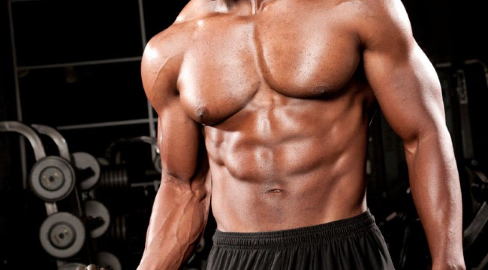
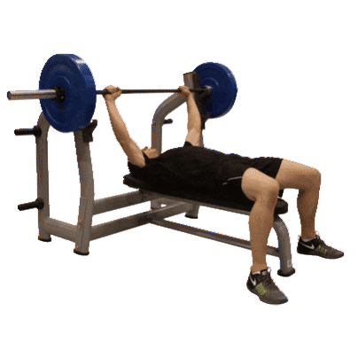
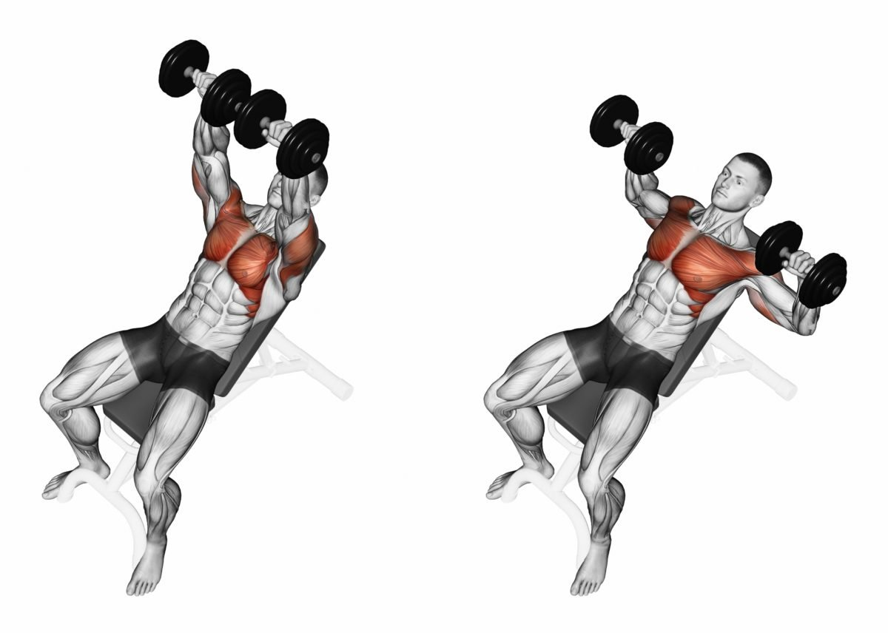
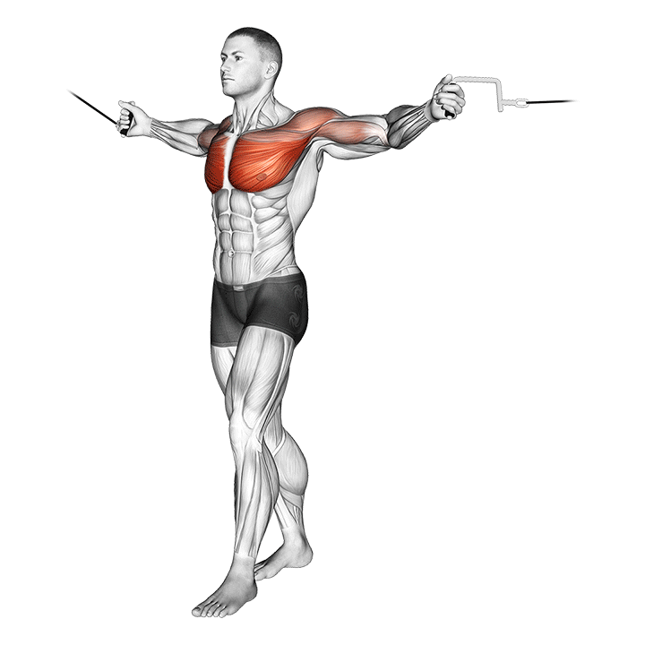
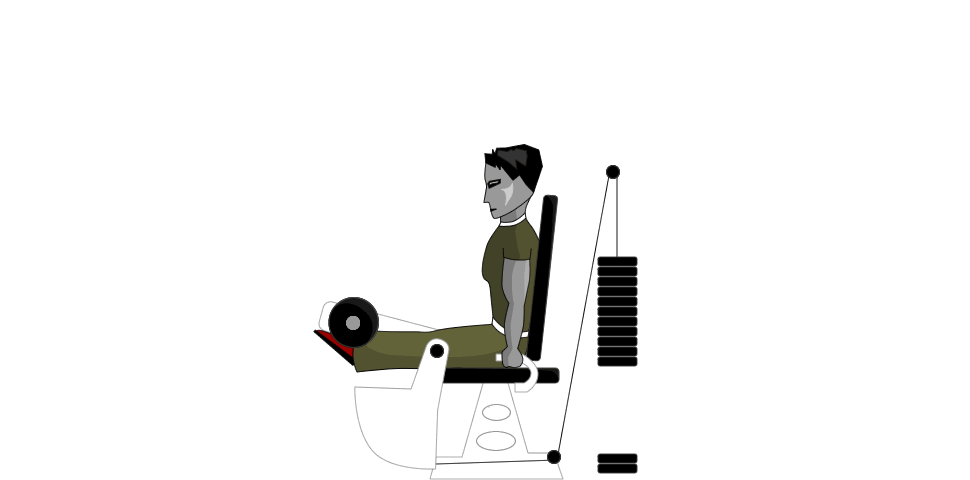
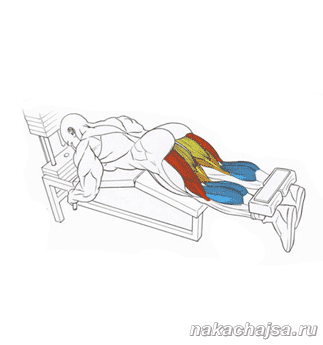

Программа тренировок

Третий день
Грудь, ноги:
1. Жим лежа

2. Жим гантелей под угром 30 градусов

3. Кроссовер

4. Разгибание ног на тренажере

5. Сгибание ног на тренажере + качаем икры

Все упражения делаем 3 подхода по 10 повторений
Так же можете посмотреть дополнительное видео о том, как правильно качать грудь и ноги, а так же понять правильную технику.
Программа тренировок на бицепс и трицепс
Программа тренировок на спину, плечи
Питание